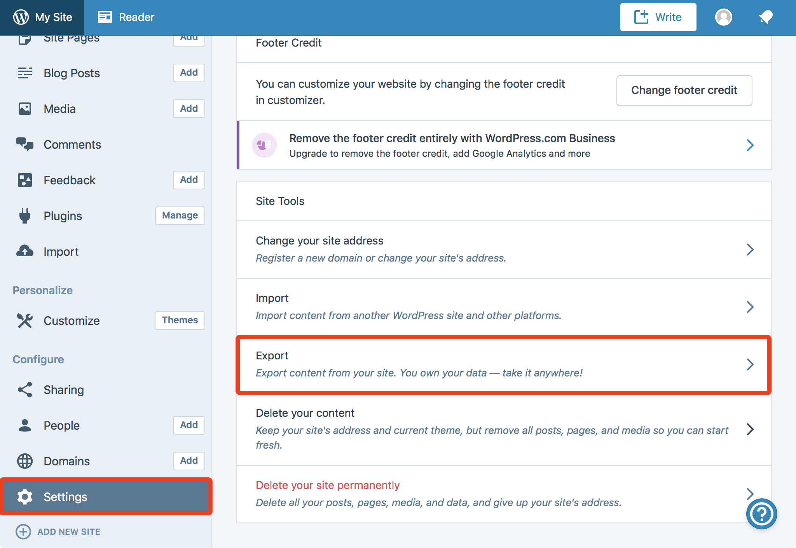
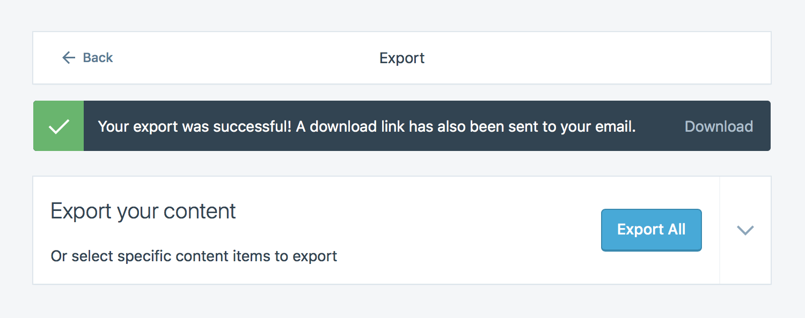
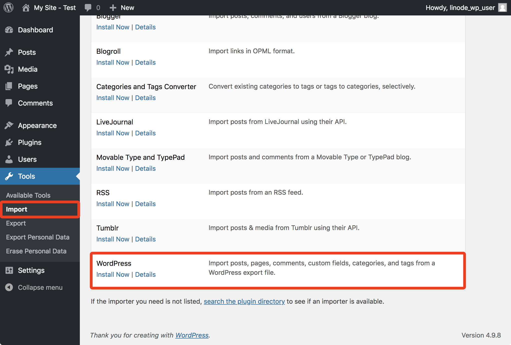
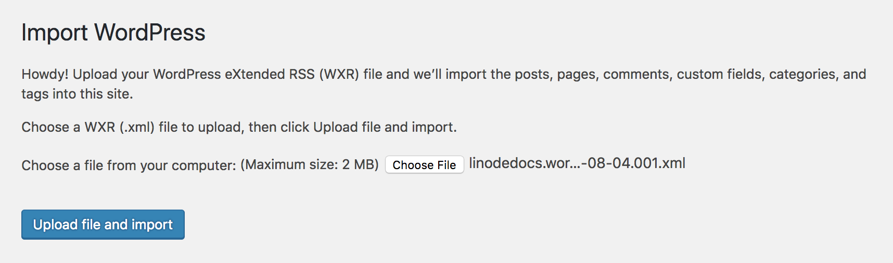
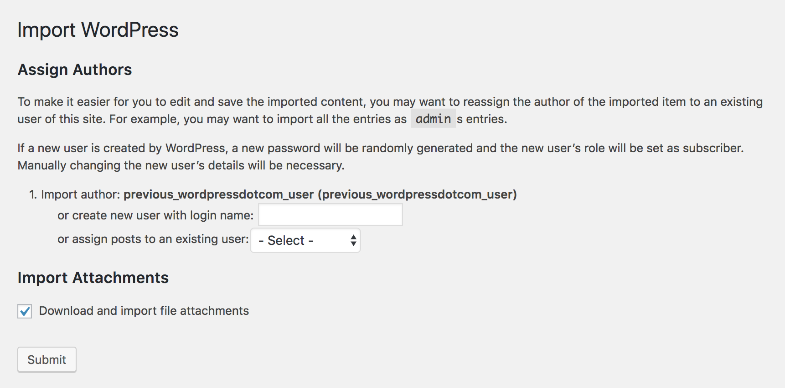
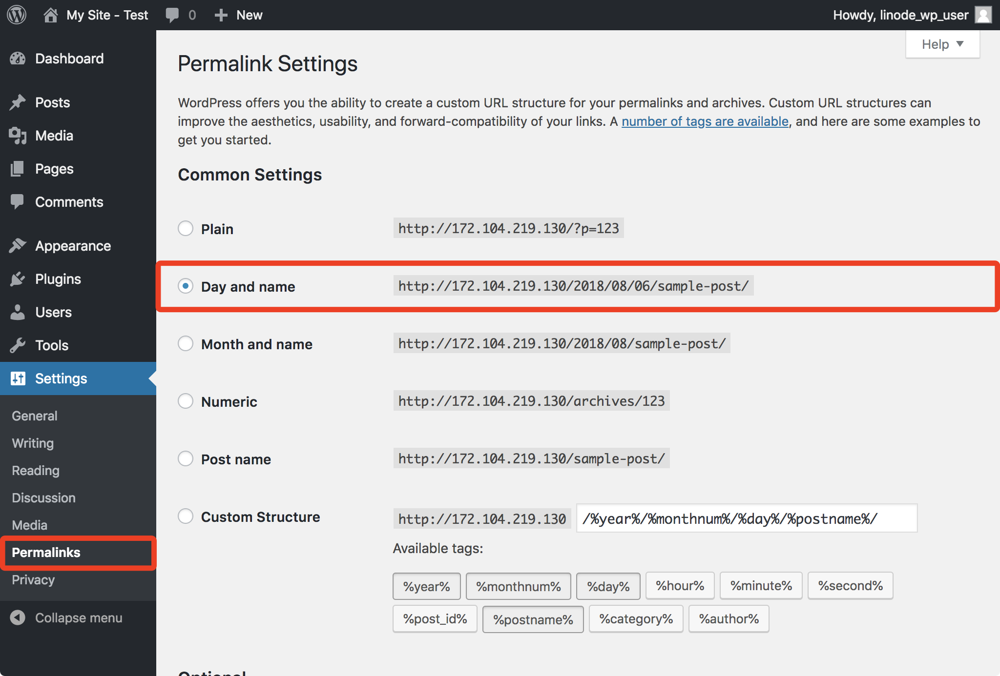

How to Migrate a WordPress.com Website to Linode
Updated by Linode Written by Nathan Melehan
This guide describes how to export your content from WordPress.com and self-host your WordPress website on Linode. Read the Best Practices when Migrating to Linode guide prior to following this guide for more information about migrating your site.
Ubuntu 18.04 is used as the distribution for the new Linode deployment in this guide. If you’d like to choose another distribution, use the examples here as an approximation for the commands you’ll need to run. You will also install either a LAMP or LEMP environment on your new Linode.
NoteWordPress.com’s export feature will export pages, posts, and comments from your site, but it will not export your themes and widgets. You will need to customize your new self-hosted WordPress site’s appearance after completing your migration.
Migrate Your Website
Deploy Your Linode
Follow Linode’s Getting Started guide and choose Ubuntu 18.04 as your Linux image when deploying. Choose a Linode plan with enough storage space to accommodate the website data from your current host.
Follow the How to Secure Your Server guide and create a limited Linux user with
sudoprivileges.Follow the Install WordPress on Ubuntu 18.04 guide to stand up a new web server and WordPress installation. Later in this guide you will use the WordPress credentials you create during the installation, so be sure to record them.
Export Your WordPress.com Content
Login to your WordPress.com dashboard and navigate to the
Settingspage. Choose theExportoption from theSettingspage:
Click
Export All, thenDownloadto download a compressed file of your content in XML form. A copy will also be emailed to you:
To export posts, pages, or feedback from the site, press the down arrow to the right of the
Export Allbutton.Unzip the file.
Import Your Content on Linode
Visit your Linode-hosted WordPress login from your browser (usually
http://<your-linode-ip>/wp-admin) and login with your WordPress credentials.Navigate to the Import page of the Tools section. The WordPress importer plugin will be listed:

Choose
Install Nowand then run this plugin. On the page that appears, clickChoose Fileand locate the XML file you previously exported from WordPress.com to your computer:
A page will appear that surfaces a few import options:

You are able to assign your imported posts to:
- Your previous WordPress.com user, which will also be imported
- A brand new user that the import plugin will create
- One of the WordPress users you’ve already created on your Linode as part of deploying your web server
Be sure to enable the Download and import file attachment option on this page.
Submit this form. Your content will now be imported.
Navigate to the
Permalinkspage in theSettingssection:
Choose the
Day and nameoption and save the change. This option matches the permalink style used on WordPress.com.
Migrating DNS Records
The last step required to migrate is to update your DNS records to reflect your new Linode’s IP. Once this is done, visitors will start loading the page from your Linode.
(Optional) Prepare Your Domain Name to Move
A recommended first step is to lower the Time to Live (TTL) setting for your domain so that the migration won’t have a negative impact on your site’s visitors. TTL tells DNS caching servers how long to save information about your domain. Because DNS addresses don’t often change server IP addresses, default TTL is typically about 24 hours.
When changing servers, however, make the TTL shorter to make sure that when you update your domain information, it takes effect quickly. Otherwise, your domain could resolve to your old server’s IP address for up to 24 hours.
Locate your current nameservers. If you’re not sure what your nameservers are, use a Whois Search tool. You will see several nameservers listed, probably all at the same company.

You can usually derive the website of your nameserver authority (the organization that manages your DNS) from the nameservers you find in the Whois report (e.g.
ns1.linode.comcorresponds withlinode.com). Sometimes the labeling for the nameservers is not directly related to the organization’s website, and in those cases you can often find the website by plugging the nameserver into a Google search.Contact your nameserver authority for details on how to shorten the TTL for your domain. Every provider is a little different, so you may have to ask for instructions.
 Updating TTL at common nameserver authorities
Most nameserver authorities will allow you to set the TTL on your domain or on individual records, but some do not allow this setting to be edited. Here are support documents from some common authorities that mention how they manage TTL:
Updating TTL at common nameserver authorities
Most nameserver authorities will allow you to set the TTL on your domain or on individual records, but some do not allow this setting to be edited. Here are support documents from some common authorities that mention how they manage TTL:Make a note of your current TTL. It will be listed in seconds, so you need to divide by 3600 to get the number of hours (e.g. 86,400 seconds = 24 hours). This is the amount of time that you need to wait between now and when you actually move your domain.
Adjust your TTL to its shortest setting. For example, 300 seconds is equal to 5 minutes, so that’s a good choice if it’s available.
Wait out the original TTL from Step 3 before actually moving your domain–otherwise, DNS caching servers will not know of the new, lower TTL yet. For more information on domain TTL, see our DNS guide.
Use Linode’s Nameservers
Follow Linode’s instructions on adding a domain zone to create DNS records at Linode for your domain. Recreate the DNS records listed in your current nameserver authority’s website, but change the IP addresses to reflect your Linode IPs where appropriate.
Locate your domain’s registrar, which is the company you purchased your domain from. If you’re not sure who your registrar is, you can find out with a Whois Search tool.

Your registrar may not be the same organization as your current nameserver authority, though they often are, as registrars generally offer free DNS services.
Log in to your domain registrar’s control panel and update the authoritative nameservers to be Linode’s nameservers:
ns1.linode.comns2.linode.comns3.linode.comns4.linode.comns5.linode.com
Updating authoritative nameservers at common registrars
Wait the amount of time you set for your TTL for the domain to propagate. If you did not shorten your TTL, this may take up to 48 hours.
Navigate to your domain in a web browser. It should now show the website from Linode, rather than your old host. If you can’t tell the difference, use the DIG utility. It should show the IP address for your Linode.
Set reverse DNS for your domain. This is especially important if you are running a mail server.
Note
If you’re having trouble seeing your site at the new IP address, try visiting it in a different browser or in a private browsing session. Sometimes your browser will cache old DNS data, even if it has updated everywhere else.
Next Steps
The WordPress.com team recommends installing the Jetpack plugin on your new self-hosted WordPress site. This free plugin is maintained by the WordPress.com team and provides features available on your WordPress.com site, including analytics, site management tools, and access to the WordPress.com apps. Premium versions of the Jetpack plugin provide extra features.
If you had subscribers on your WordPress.com site, you can also migrate them to your new self-hosted site. This requires that you install the Jetpack plugin and uses Jetpack’s subscription migration tool.
Your new self-hosted WordPress site uses the default theme and widgets. Review the WordPress.org documentation for themes and widgets to learn how to customize your site’s appearance.
More Information
You may wish to consult the following resources for additional information on this topic. While these are provided in the hope that they will be useful, please note that we cannot vouch for the accuracy or timeliness of externally hosted materials.
Join our Community
Find answers, ask questions, and help others.
This guide is published under a CC BY-ND 4.0 license.